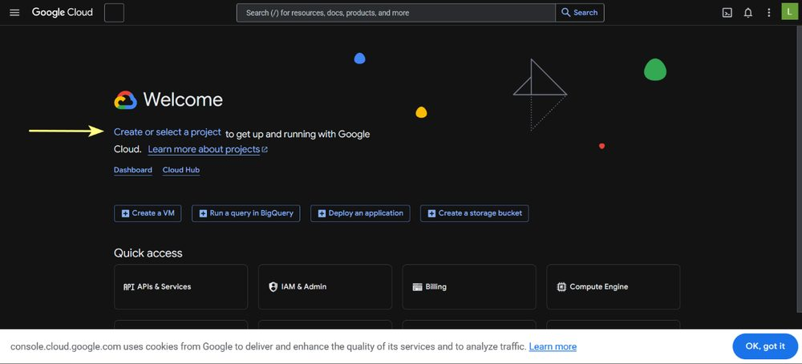
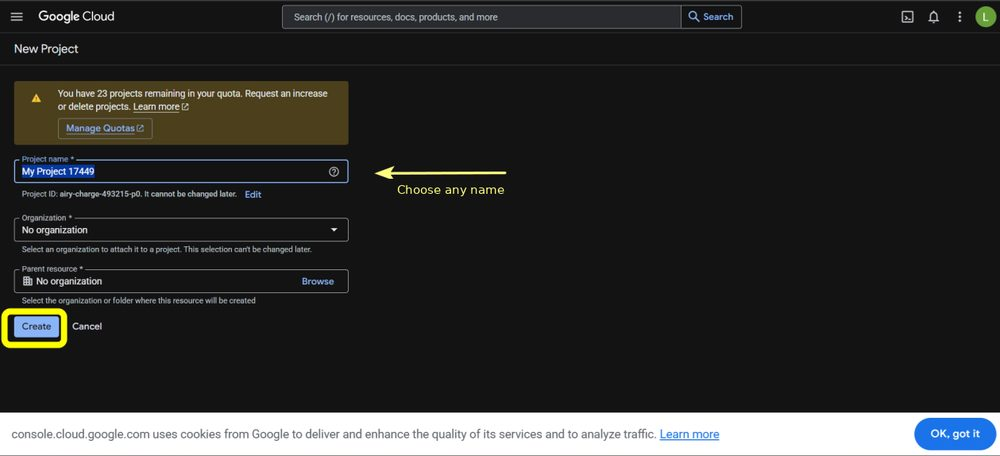
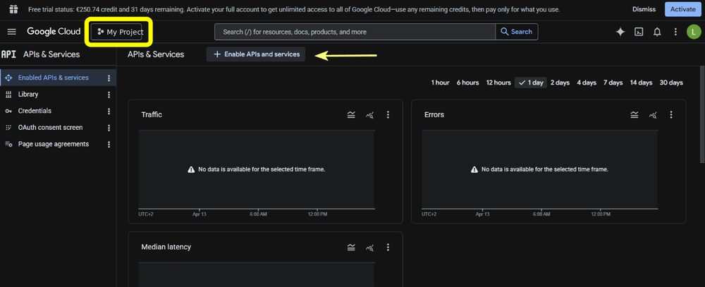
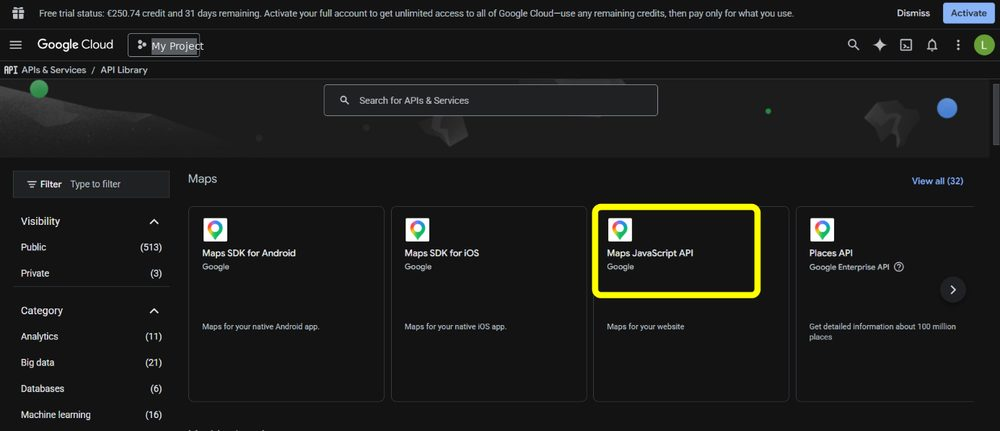
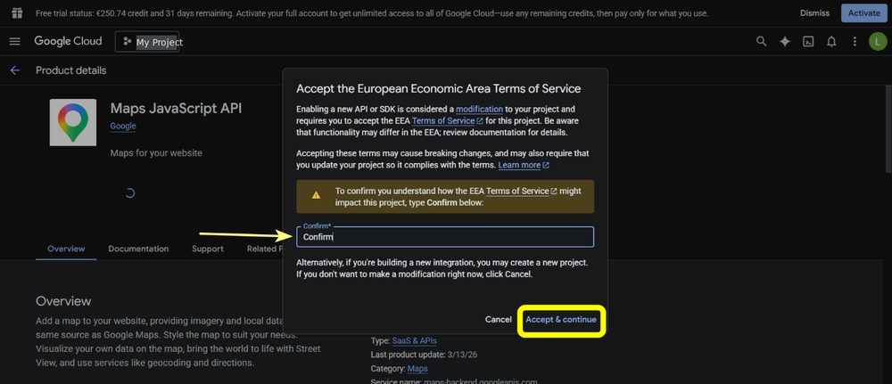
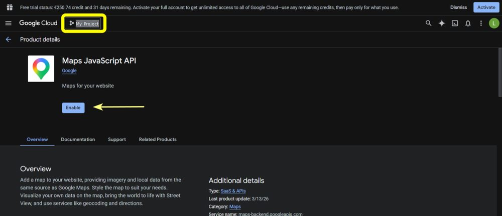
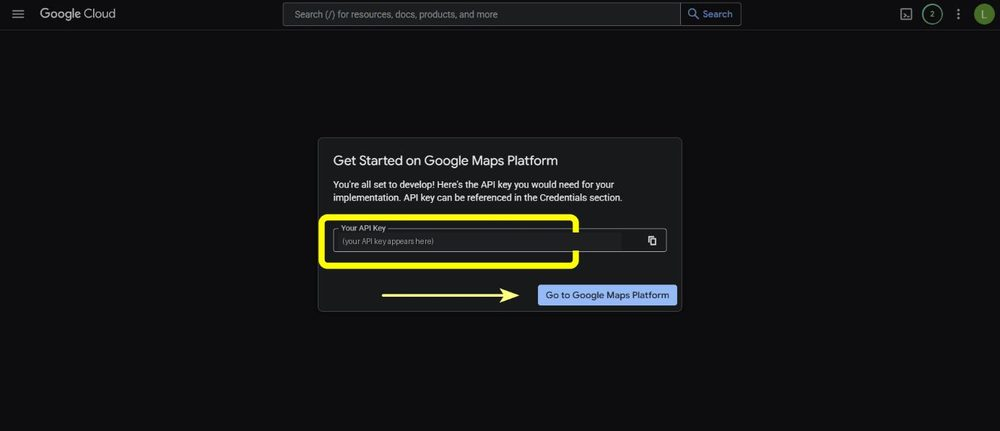
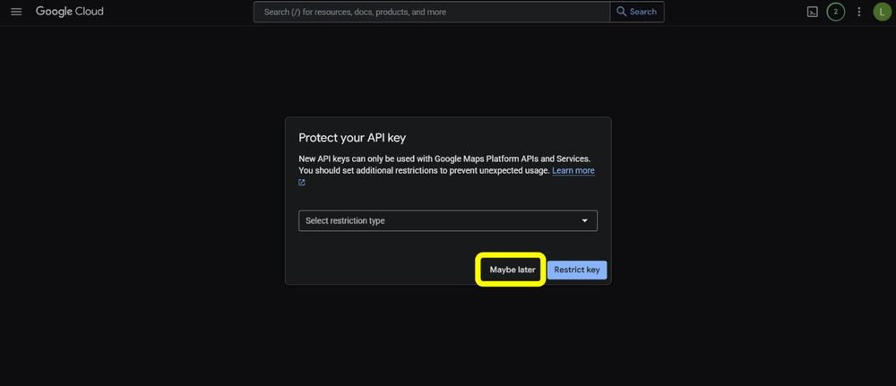
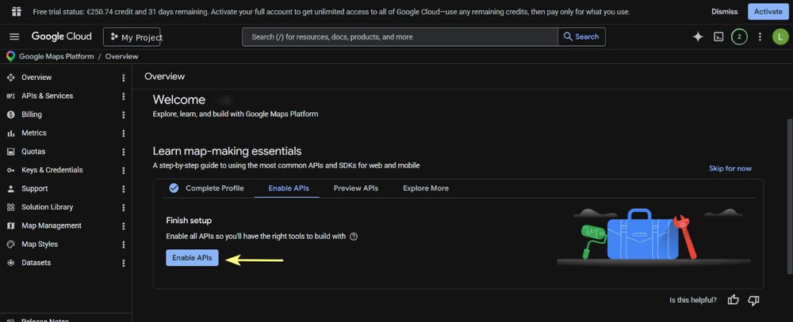

1. Open the Google Cloud console
Go to console.cloud.google.com and sign in with your Google account. Click on Create or select a project.

Street View and Satellite View run on Google Maps. By default Incyclist uses its own Maps API key. This guide shows how to create your own key and enter it in Incyclist. It takes about ten minutes.
Desktop only. Entering your own key is available in Incyclist for Windows, macOS and Linux. The Android and iOS apps do not use this page.
Go to console.cloud.google.com and sign in with your Google account. Click on Create or select a project.

Create a new project. The name is up to you — pick one you will recognise later, or keep the suggested one. Click Create.

Make sure your new project is selected, then open APIs & Services and click Enable APIs and services.

In the API library, select Maps JavaScript API. This is the only API Incyclist needs.

If Google asks you to accept the terms of service, type Confirm and click Accept & continue.

Click Enable.

Google now generates your API key. Copy it right away and keep it somewhere safe — the dialog is shown only once. (If you lose it, you can create a new key under Keys & Credentials.) Treat the key like a password and do not share it.

Google then offers to restrict the key. You can click Maybe later to continue.

On the overview page, click Enable APIs if it is offered to finish the setup.

After the restart, Incyclist uses your key. Street View and Satellite View are then available in Simulate mode, and side views are enabled.
For normal individual use, no. Google gives every account a free monthly allowance for the Maps Platform. At the time of writing it is 5,000 Street View loads and 10,000 Satellite View loads per month.
Google counts usage per ride, not per minute: every time Incyclist starts the main view (Street View or Satellite View) for a ride counts as one load. It does not matter how long you ride.
If you switch on side views, each side view is loaded separately by Google and counts as an additional load for that ride. A ride with side views therefore uses a few loads instead of one. Even so, riding several times a day, every day of the month, stays below the free allowance.
The key belongs to your Google account, so any usage above the allowance would be billed by Google to you — Incyclist is not involved and does not see your account. Google requires a billing account to be set up before the key works, but that does not mean you pay anything while you stay within the allowance.
If you want to be completely sure, you can set a daily quota or a budget alert for the project in the Google Cloud console. Google may change its prices and allowance over time, so the current numbers are on the Google Maps Platform pricing page.
It is optional. You can click Maybe later and add restrictions later under Keys & Credentials in the console.
Google offers two kinds of restriction, and only one of them suits Incyclist:
If Street View stops working after you changed a restriction, set the application restriction back to None and restart Incyclist.
Check that the key was pasted without spaces, that you restarted Incyclist, and that the Maps JavaScript API is enabled for the project the key belongs to. More questions are answered in the FAQ, or send me an email.